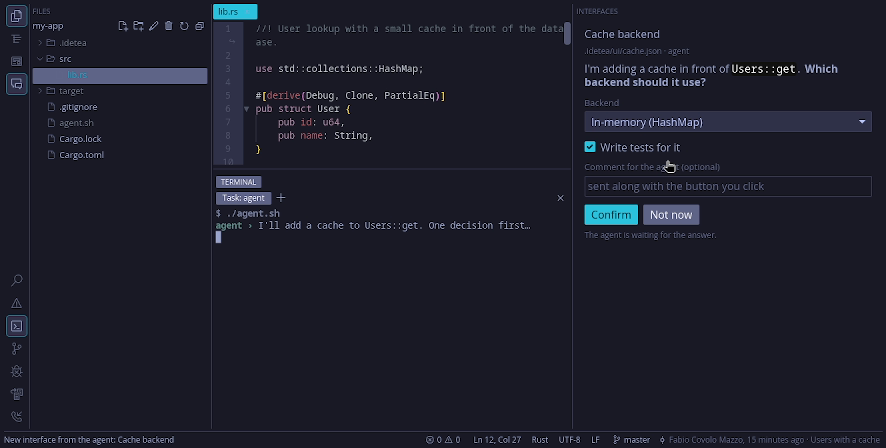
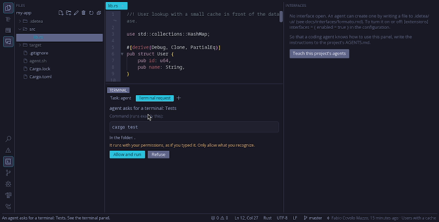
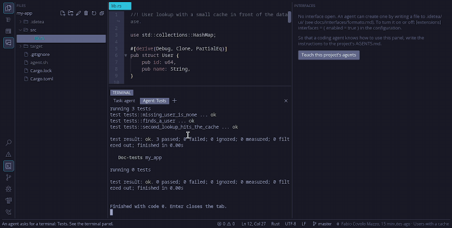

Rapide
Il s'ouvre, puis s'écarte
Démarre largement sous les 200 ms. Un fichier de 50 Mo s'ouvre en un dixième de seconde. Un fichier minifié d'une seule ligne géante s'ouvre dans un mode léger, au lieu de figer la fenêtre.
Gratuit · Apache 2.0 · Rust pur
Un IDE rapide et silencieux, où les agents de code demandent avant d'agir. Vous restez dans l'éditeur. L'agent reste dans le terminal. Les questions apparaissent sous forme de formulaire, et rien ne s'exécute tant que vous ne l'avez pas dit.
Linux (x86_64 et aarch64), macOS (Apple Silicon) et Windows (x86_64). Avant la 1.0.
À qui il s'adresse. Aux personnes qui écrivent du code à côté de Claude Code, de Codex, ou de tout agent qui lit AGENTS.md et CLAUDE.md, et qui veulent un éditeur qui s'ouvre vite, reste prévisible, et ne touche pas au réseau.
Rapide
Démarre largement sous les 200 ms. Un fichier de 50 Mo s'ouvre en un dixième de seconde. Un fichier minifié d'une seule ligne géante s'ouvre dans un mode léger, au lieu de figer la fenêtre.
Silencieux
Aucune fenêtre sur des fonctions que vous n'avez pas demandées. Le réseau ne sert que lorsque vous le demandez (pousser, tirer, récupérer, ou une compétence que vous installez). Les paramètres vivent dans un seul fichier TOML.
Aux commandes
Les questions sont de vrais formulaires : choix, cases, étapes, images, sons. Une demande de terminal montre la commande entière. Un projet ne peut pas s'inscrire tout seul sur votre liste d'autorisation.
Éditeur
Curseurs multiples, mode vim facultatif, arborescence, recherche dans le projet, LSP, git, un terminal intégré, débogage avec gdb, et des onglets pour Markdown, SVG, images et PDF.
Petit
L'arborescence, le terminal, git et le débogueur sont des extensions que vous pouvez désactiver. Tea, la mascotte en pixel art, guette une question en attente et s'efface quand vous la repliez.
Courts extraits narrés, en anglais, avec les sous-titres incrustés.



Tiré de la comparaison honnête avec VS Code, Cursor, Zed, JetBrains et Helix. Mise à jour pour la 0.15.0.
Prêt à l'emploi. La version actuelle est v0.21.0.
SHA256SUMS sur cette page contient les sommes de contrôle. Changez VERSION quand une plus récente sort, ou prenez le fichier depuis les
Releases.
x86_64 et aarch64, .tar.gz ou .AppImage. ./install.sh place idetea dans ~/.local/bin et dans le menu des applications. L'AppImage a besoin de chmod +x ; --install-desktop l'ajoute au menu.
Apple Silicon, un .tar.gz avec IDE TEA.app. idetea --install-desktop crée ~/Applications/IDE TEA.app. Il n'y a pas encore de paquet pour Mac Intel.
x86_64, l'installateur -setup.exe ou le .zip portable (idetea.exe est à l'intérieur). Pas encore signé : SmartScreen peut avertir la première fois.
Linux (x86_64)
VERSION=0.21.0
curl -fsSL -O "https://github.com/fabiocmazzo/idetea/releases/download/v${VERSION}/idetea-${VERSION}-x86_64-linux.tar.gz"
tar -xzf idetea-${VERSION}-x86_64-linux.tar.gz
cd idetea-${VERSION}-x86_64-linux
./install.shPour ARM, utilisez idetea-${VERSION}-aarch64-linux.tar.gz. L'AppImage est IDE_TEA-${VERSION}-x86_64.AppImage (ou …-aarch64.AppImage).
macOS (Apple Silicon)
VERSION=0.21.0
curl -fsSL -O "https://github.com/fabiocmazzo/idetea/releases/download/v${VERSION}/idetea-${VERSION}-aarch64-macos.tar.gz"
tar -xzf idetea-${VERSION}-aarch64-macos.tar.gz
cd idetea-${VERSION}-aarch64-macos
./idetea --install-desktopWindows (x86_64), dans PowerShell
$Version = "0.21.0"
Invoke-WebRequest -Uri "https://github.com/fabiocmazzo/idetea/releases/download/v$Version/IDE_TEA-$Version-x86_64-setup.exe" -OutFile "IDE_TEA-$Version-x86_64-setup.exe"
Start-Process ".\IDE_TEA-$Version-x86_64-setup.exe"Depuis les sources (il faut Rust stable). Le paquet s'appelle tea-app ; le binaire s'appelle idetea :
cargo install --locked --git https://github.com/fabiocmazzo/idetea tea-app
idetea --install-desktopFacultatif : git pour le panneau git, gdb 14+ (ou lldb-dap sous macOS) pour le débogage, et les serveurs de langage que vous utilisez. rust-analyzer, clangd, pyright, typescript-language-server, gopls, lua-language-server, zls, zx lsp, hare-lsp (Hare) et moon lsp (MoonBit) sont déjà configurés.

IDE TEA est le projet d'une personne, sous Apache 2.0, et il restera gratuit. Une étoile aide la personne suivante à le trouver.
Ça a commencé par un jeu de mots sur iced tea, le thé glacé, parce que l'IDE est fait avec iced. En portugais, TEA est aussi le sigle de l'autisme. IDE TEA est fait par un développeur autiste, et cela se voit dans ce qu'il valorise : peu de bruit, un texte clair, des choses qui se comportent toujours de la même façon, et de la place pour se concentrer.
Lisez le manifeste. La liste complète des fonctionnalités est sur la page des fonctionnalités.